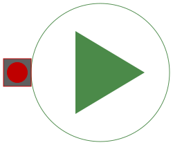

| Name |
Description |
 DCPM_Start DCPM_Start |
Test example: DC with permanent magnet starting with voltage
ramp |
|
DCPM_CurrentControlled |
Test example: DC with permanent magnet starting with current
controller |
| DCEE_Start |
Test example: DC with electrical excitation starting with
voltage ramp |
| DCSE_Start |
Test example: DC with serial excitation starting with voltage
ramp |
|
DCSE_SinglePhase |
Test example: DC with serial excitation starting with voltage
ramp |
|
DCPM_Temperature |
Test example: Investigate temperature dependency of a DCPM
motor |
|
 DCPM_Cooling |
Test example: Cooling of a DCPM motor |
|
DCPM_QuasiStationary |
Test example: Compare DCPM motors transient -
quasistationary |
|
DCPM_withLosses |
Test example: Investigate influence of losses on DCPM motor
performance |